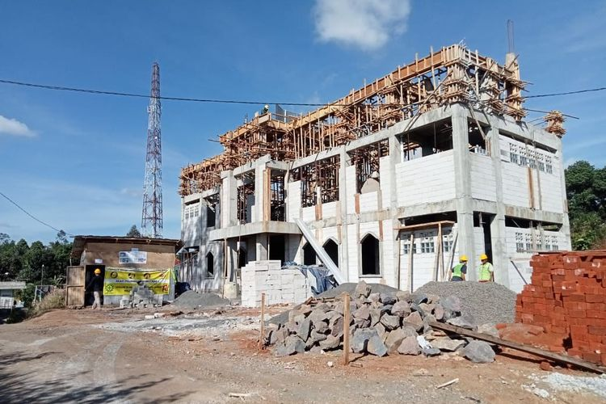

Wisuda 50 Santri Tahfidz 15 Juni 2023 Dengan penuh haru dan bangga, Pondok Pesantren Daarul Shafa menggelar wisuda bagi 50 santri tahfidz yang telah menyelesaikan hafalan Al-Qur’an—sebuah momen suci yang memancarkan cahaya ilmu dan keikhlasan. Dalam lantunan ayat-ayat-Nya, terpahat bukti ketekunan, kesabaran, dan keberkahan yang akan mengalir sepanjang hayat. Inilah generasi Qur’ani, penjaga wahyu di tengah zaman—semoga langkah mereka senantiasa diberkahi dan menjadi penerang bagi umat. Baca Selengkapnya
 Pembangunan Gedung Baru 1 Mei 2022 Sebagai wujud komitmen terhadap pendidikan dan kenyamanan santri, Pondok Pesantren Daarul Shafa kini tengah membangun gedung baru asrama putra—sebuah langkah besar menuju lingkungan belajar yang lebih representatif, nyaman, dan inspiratif. Gedung ini bukan sekadar bangunan, tapi simbol harapan dan dedikasi, tempat tumbuhnya generasi Qur’ani yang tangguh dalam ilmu dan akhlak. Semoga menjadi ladang amal jariyah yang terus mengalir tanpa henti. Baca Selengkapnya